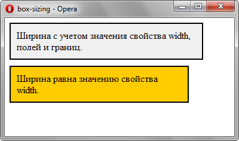

Согласно спецификации CSS ширина блока складывается из ширины контента (width), значений отступов (margin), полей (padding) и границ (border). Аналогично обстоит и с высотой блока. Свойство box-sizing позволяет изменить этот алгоритм, чтобы свойства width и height задавали размеры не контента, а размеры блока.
Синтаксис
content-box
Основывается на стандартах CSS, при этом свойства width и height
задают ширину и высоту контента и не включают в себя значения
отступов, полей и границ.
border-box
Свойства width и height включают в себя значения полей и границ,
но не отступов (margin). Эта модель используется браузером
Internet Explorer в режиме несовместимости.
padding-box
Свойства width и height включают в себя значения полей,
но не отступов (margin) и границ (border).
inherit
Наследует значение родителя.
Пример:
<!DOCTYPE html>
<html>
<head>
<meta charset="utf-8">
<title>box-sizing</title>
<style>
.box1 {
background: #f0f0f0;
width: 300px;
padding: 10px;
border: 2px solid #000;
}
.box2 {
background: #fc0;
width: 300px;
padding: 10px;
margin-top: 10px;
border: 2px solid #000;
-moz-box-sizing: border-box;
box-sizing: border-box;
}
</style>
</head>
<body>
<div class="box1">
Ширина с учетом значения свойства width,
полей и границ.
</div>
<div class="box2">
Ширина равна значению свойства width.
</div>
</body>
</html>
